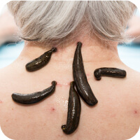

Tabiiy davolanish usullari yordamida kasalliklardan forix bo'ling.
Hijoma,manual terapiya,zuluk va turli tabiiy giyohlar eng kop uchraydigan kasalliklardan yengish yordam beradi.Sogligingizni oz ishining professionallariga ishonib topshiring.
Qabulga yozilish.png)
Xizmatlar
-

Hijoma
Imom Termiziy Abdulloh ibn Abbos raziyallohu anhumodan rivoyat qilgan hadisda rasululloh sallallohu alayhi va sallam dedilar: «Sizlar hijoma qiladigan kunlaringizning eng yaxshisi 17, 19 va 21-kunlardir» (bu kunlar hijrij-kamariy hisobdagi oylar kunlaridir).
-

Manual Terapiya
Imom Termiziy Abdulloh ibn Abbos raziyallohu anhumodan rivoyat qilgan hadisda rasululloh sallallohu alayhi va sallam dedilar: «Sizlar hijoma qiladigan kunlaringizning eng yaxshisi 17, 19 va 21-kunlardir» (bu kunlar hijrij-kamariy hisobdagi oylar kunlaridir).
-

Zuluk bilan davolash
Imom Termiziy Abdulloh ibn Abbos raziyallohu anhumodan rivoyat qilgan hadisda rasululloh sallallohu alayhi va sallam dedilar: «Sizlar hijoma qiladigan kunlaringizning eng yaxshisi 17, 19 va 21-kunlardir» (bu kunlar hijrij-kamariy hisobdagi oylar kunlaridir).
-

Tabiiy dori vositalari bilan davolash
Imom Termiziy Abdulloh ibn Abbos raziyallohu anhumodan rivoyat qilgan hadisda rasululloh sallallohu alayhi va sallam dedilar: «Sizlar hijoma qiladigan kunlaringizning eng yaxshisi 17, 19 va 21-kunlardir» (bu kunlar hijrij-kamariy hisobdagi oylar kunlaridir).